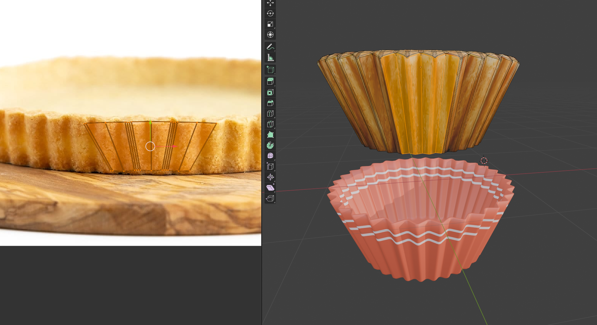
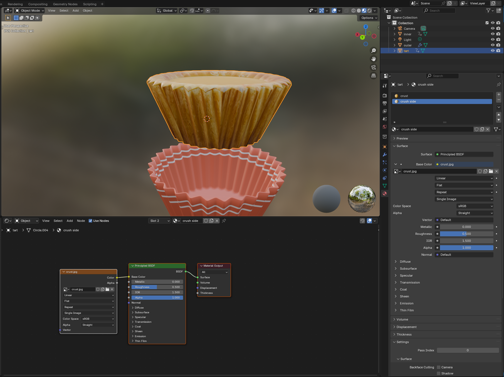
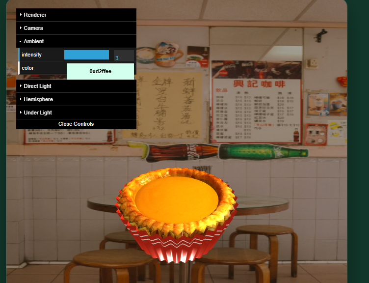
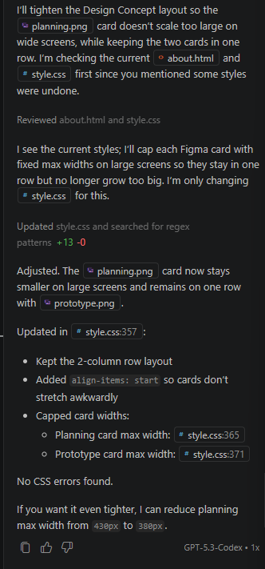

HK Bites 3D
About This Project

HK Bites 3D is an interactive Web 3D experience that showcases iconic Hong Kong street food through real-time 3D models. Users can explore items such as egg waffle, egg tart, and Hong Kong-style milk tea using interactive features including camera controls, wireframe mode, model switching, and animation controls.
Each food model contains its own unique animation to reflect the characteristics of the item, allowing users to switch between models and trigger animations through the user interface. These interactions were designed to create a more engaging and immersive experience while highlighting elements of Hong Kong food culture.
The project combines cultural storytelling with modern web technologies to create an interactive digital food experience that is accessible across both desktop and mobile devices.
GitHub Repository: Link
Design Concept
The visual direction is inspired by the warmth and vibrancy of Hong Kong street food culture. A clean, minimal interface keeps the focus on the 3D models, while consistent colors and straightforward navigation help users move through the site confidently.
Basic planning and interface structure were first drafted in Figma to map layout, navigation flow, and interaction priorities before implementation.


Each model page includes concise food descriptions so visitors can learn cultural context without feeling overwhelmed.
3D Modelling Process
The 3D assets were created in Blender with optimized geometry and realistic material work suitable for web rendering. Textures were applied to improve detail while keeping performance practical for browser delivery.
A full fluid simulation was originally tested for milk tea pouring, but this was not ideal for export and playback in Three.js. A simplified animation method was used instead by adjusting liquid mesh position and shape to simulate pouring and movement.
This approach maintains visual quality while improving performance, and is supported by subtle secondary animations to increase realism.


Texturing Process
Image textures were applied to the 3D models to improve realism and surface detail. UV unwrapping techniques were used in Blender to correctly map textures onto each object while reducing stretching and distortion.
Different materials and texture settings were tested to match the appearance of real Hong Kong food items, such as the glossy surface of milk tea and the baked texture of egg waffles and egg tarts. Shader-based texturing techniques were initially explored during development; however, due to compatibility and rendering issues within the Three.js implementation, image textures were used instead to provide more stable and efficient results for web deployment.
This approach improved performance while still achieving a visually convincing and immersive presentation.


Render Video
Short render previews are included below to show animation timing and look development for each food model.
Technologies Used
- HTML5 and CSS3 for structure and styling
- JavaScript for interaction logic
- Three.js for real-time 3D rendering in the browser
- Blender for modelling and animation
- Adobe Audition for audio editing and cleanup
Lighting was refined through experimentation with GUI controls. Ambient, hemisphere, directional, and under-lighting combinations were tested to achieve a balanced scene.
Lighting Development
Lighting was refined through experimentation with GUI controls. Ambient, hemisphere, directional, and under-lighting combinations were tested to achieve a balanced scene.

Audio Implementation
Lighting played an important role in creating the atmosphere of the 3D scenes. Multiple lighting setups were explored through experimentation and trial-and-error using a GUI control system.
Different light types were implemented and adjusted, including ambient light, hemisphere light, directional light, and under-lighting. These were tested with different intensities, positions, and colour tones to achieve a warm and visually balanced presentation inspired by Hong Kong cafés and street food environments.
The lighting controls also allow users to interact with the scene dynamically, helping improve both usability and visual engagement.

Testing and Refinement
Testing was carried out throughout the development process to improve usability, performance, and visual consistency across the website. Different layouts, lighting configurations, animations, and interaction methods were evaluated and refined based on their effectiveness and responsiveness.
Feedback received during testing indicated that the user interface and interactive controls functioned correctly and were easy to use. However, the original plain background behind the 3D models appeared visually pale and lacked atmosphere. In response to this feedback, the background was redesigned using an image-based environment to create a warmer and more visually engaging presentation that better matched the Hong Kong food theme.
Particular attention was also given to ensuring that the 3D models loaded correctly and that interactive features such as animations, wireframe mode, lighting controls, and camera interactions functioned smoothly. Responsive testing was considered to maintain readability and usability across different screen sizes and devices.
Accessibility Considerations
Accessibility was included throughout design and development: readable text sizing, clear contrast, consistent button styles, and simple navigation patterns all help reduce cognitive load.
The interface is intentionally uncluttered so users can focus on interacting with the 3D content.
Use of AI Tools
AI tools were used during the development process to assist with planning, layout ideas, and refining written content for sections such as the About page.
However, all 3D modelling, scene setup, interaction design, animation implementation, lighting configuration, and Three.js development were independently designed and implemented by myself.
